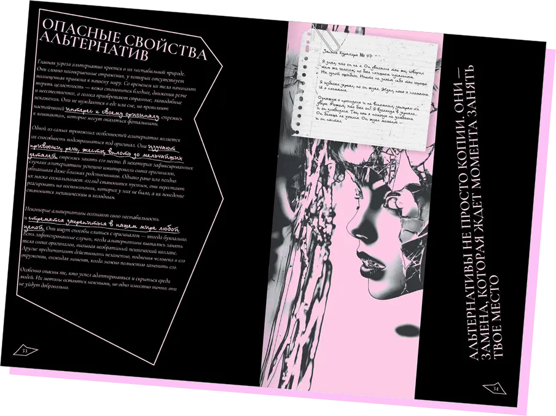
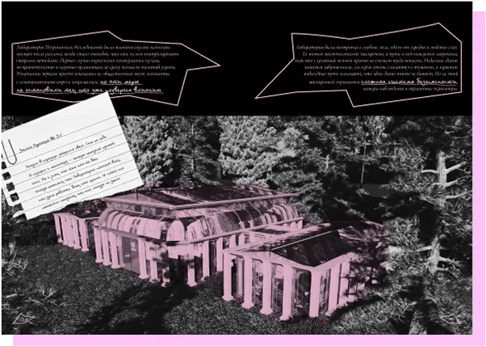
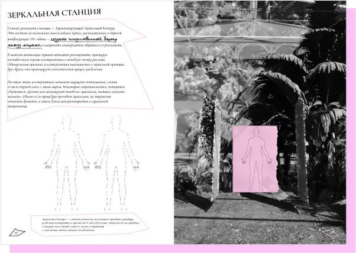
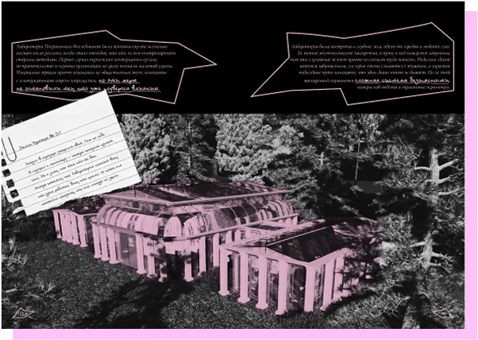
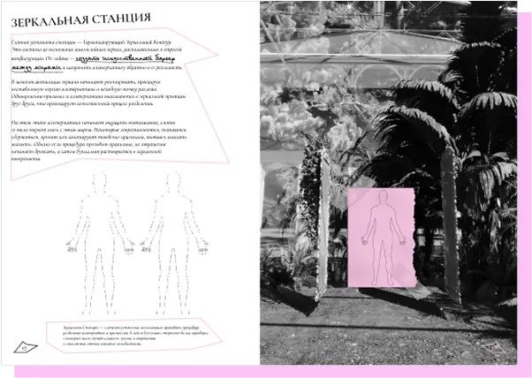

о чем путеводитель?

о чем путеводитель?
Путеводитель «Лаборатория Пограничных Исследований» представляет собой не просто сборник фактов, а рабочий инструмент куратора, помогающий ориентироваться в Лаборатории Пограничных Исследований.
Он содержит не только информацию о разломе и катастрофе, изменившей мир, но и подробно объясняет принципы работы лаборатории, её зонирование, технологические процессы и правила взаимодействия с альтернативами
 


